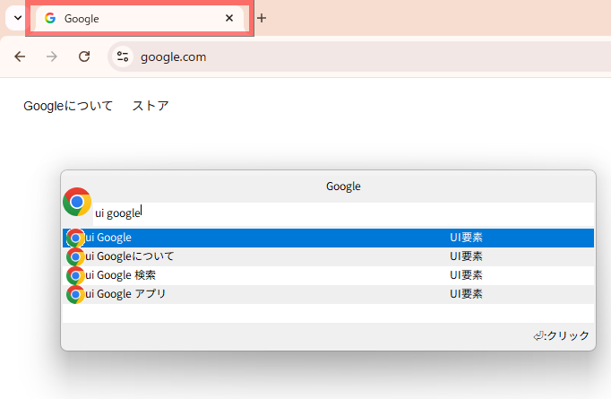
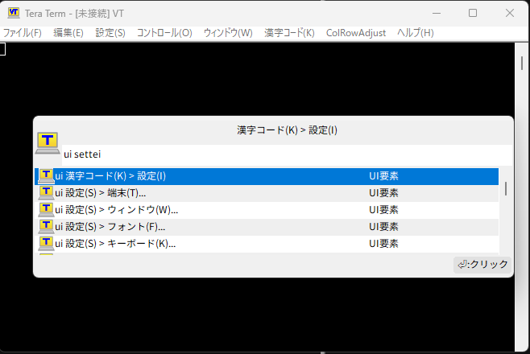
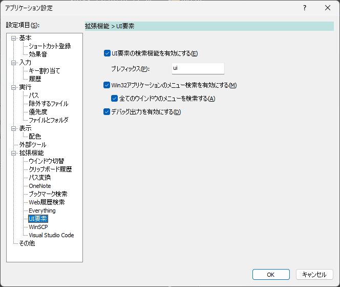

UI要素
UI要素をテキストで検索して選択する機能
アクティブなウインドウ上にあるクリック可能なUI要素について、テキストで要素を絞り込んでコマンドとして実行できる。
実行すると、対応するUI要素をクリックしたような動作をすることができる

選択中の候補に対応するUI要素に対してハイライト枠を表示する

レガシーWin32アプリケーションに対しては、メニュー項目を検索して選択することができる。
(トップレベルのメニュー項目以下のメニュー項目を表示できる)
使用方法
アプリケーション設定で機能を有効化しておく
プレフィックスを設定している場合はプレフィックス文字列を入力する
キーワードを入力すると、そのキーワードをラベルテキストに含むUI要素を候補として表示する
選択中のUI要素の領域をハイライト表示する
コマンドを実行すると、対応するUI要素をクリックする
Win32アプリケーションのメニュー項目の表示名のカスタマイズ
制限事項(次節)に記載している通り、オーナードローのメニュー項目テキストについては取得できない。
該当する項目についてはファイル(F)> (1)のような表示になるが、アプリ設定保存フォルダ に生成されるuielement-menu-alias.jsonというファイルをカスタマイズすることにより、任意の文言で表示できる
制限事項
UIAutomationElement経由で候補となるUI要素の情報を取得しているが、UIAutomationElementに非対応のコントロールについては取得できない
アプリが独自のUIAutomationElementを実装していても、実装次第では取れない場合がある
また、UI要素を列挙する際のタイムアウトを設けているため、複雑な画面構成の場合は取れない場合もある
Win32アプリケーションのメニュー項目取得について、オーナードローのメニュー項目のテキストは取得できない。
このとき、メニュー位置を表すインデックスを表示するUIAutomationElement経由でメソッドを呼んでいるだけなので、実行しても所望の結果が得られない場合がある
クリックされない、フォーカスが設定されない、など
設定
初期設定で機能は無効になっている。
本機能を使用する場合は、アプリケーション設定の 拡張機能 > UI要素 から機能を有効化する必要がある。

実行時の動作
押下キー |
動作 |
|---|---|
|
対応するUI要素をクリックする |
|
対応するUI要素にフォーカスを設定する |